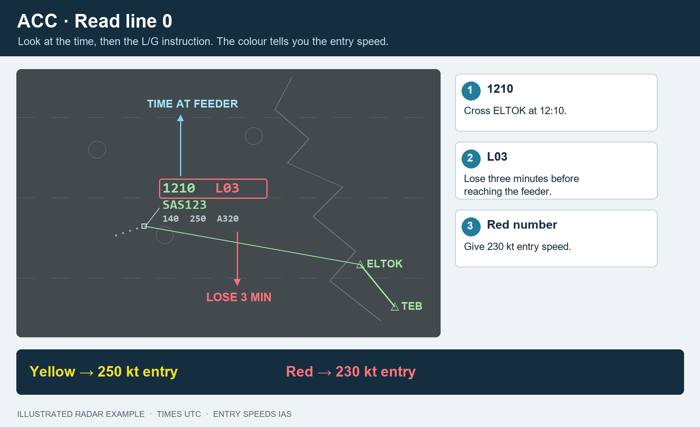
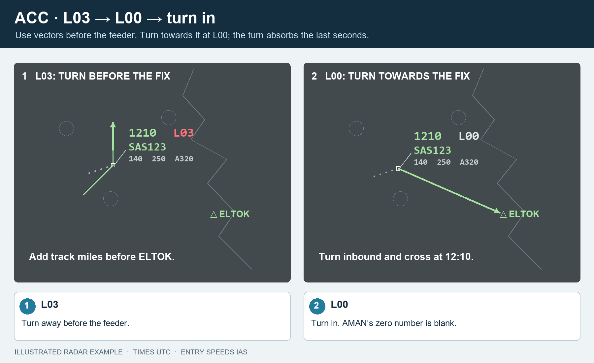
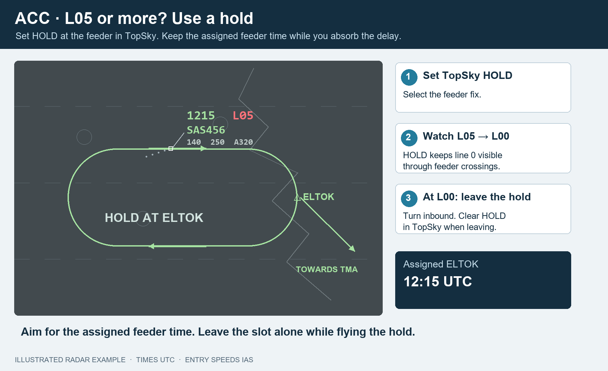
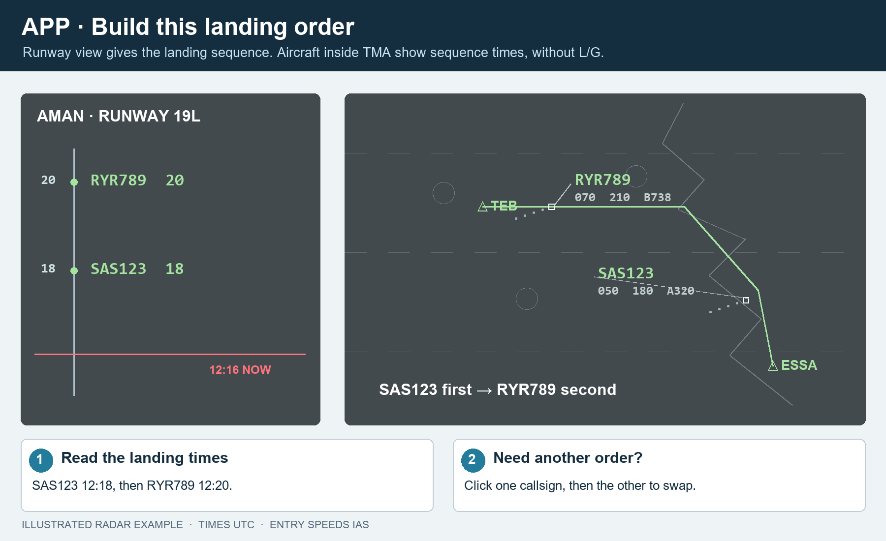

ACC delivers the feeder order. APP builds the landing order. All times are UTC.
ESSA_E_APP is sequencer first, then ESSA_FMP. This priority is enforced by the updated backend for every client. ESOS/ESAA CTR, ESSA APP and ESSA_FMP connect automatically; other positions connect manually. TWR is view-only.

1210: cross the feeder at 12:10. L03: lose three minutes before entry. G: time to gain.
Yellow number → 250 kt entry. Red number → 230 kt entry. These are IAS, not groundspeed.

Use ACC for the feeders you cover. ESSA_W_APP uses ARR-W for ELTOK. AMAN suggests a sequence; the final decision is yours. To swap your feeder order, click one aircraft, then the other. Their assigned times and lose/gain instructions update to match the new order. AMAN gives aircraft separate feeder slots.

Leave the assigned slot alone while flying the hold. Use STA-FF and NOW to check when it should cross inbound.

Inside TMA, use the assigned times: there are no ACC-style L/G instructions. Runway spacing still applies. Runway and FLOW are visible to everyone; ACC/ARR-W filters only the feeders you cover.
| When… | Do this |
|---|---|
| You give a meaningful direct or approach change | Recompute to accept a new estimate. Do not use repeated Recompute to count down a hold. |
| An aircraft goes around | Missed Approach → aircraft → Reinsert on → TEB, BALVI, ERXEC or OBCIV. |
| You need exact times | Aircraft → Information. |
| An aircraft has no flight plan | MAESTRO → Insert flight. |
| Something looks wrong | Check Information, Errors, the runway and the sequencer-version warning. |
Pictures are illustrated radar examples. The holding fix and timing shown are examples of the workflow.